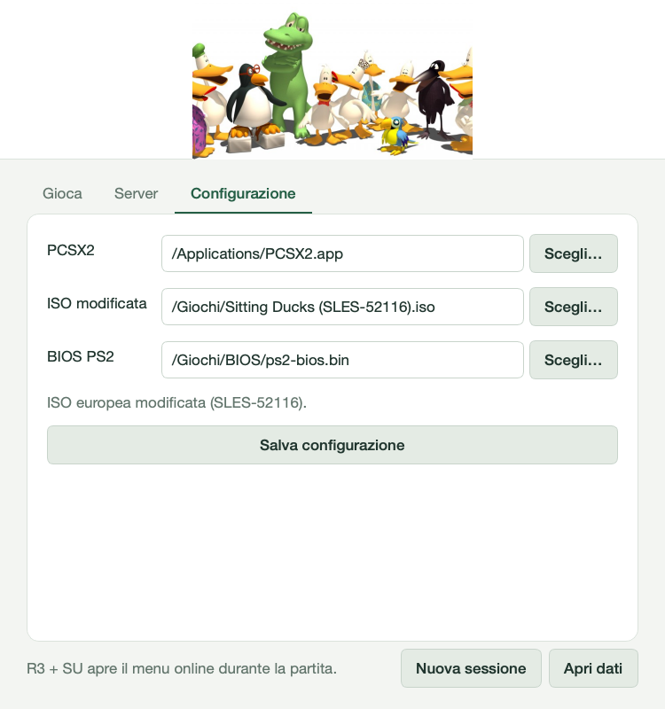
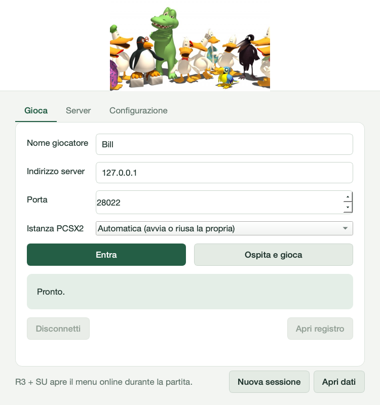
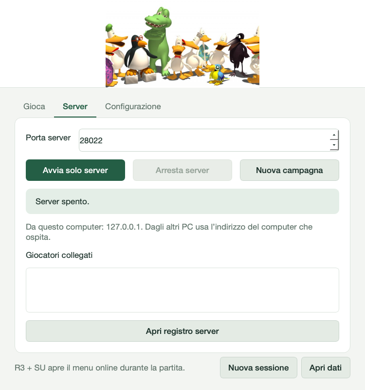

Tutorial
Dall'installazione alla prima partita online.
Installare la mod
1. Cosa serve
- PCSX2 (provato con la v2.9).
- La tua copia di Sitting Ducks per PS2, versione europea SLES-52116, in ISO. Il launcher vuole la ISO modificata (furgone e avvio senza loghi): lo strumento che la ricava dalla tua copia è in preparazione.
- Il BIOS della tua PS2.
Non distribuiamo il gioco, il BIOS o i file estratti.
2. Scarica e apri il launcher
- macOS: scarica
Sitting-Ducks-Online-macOS-arm64.zipdalla pagina Releases, estrailo e apri Sitting Ducks Online.app. La prima volta usa tasto destro → Apri, perché l'app non è firmata. - Windows: estrai tutta la cartella dello zip, non solo il
.exe, e apri Sitting Ducks Online.exe. Dai sorgenti,gioca_online.batscarica e verifica Python da solo al primo avvio.
3. Configurazione
Apri la scheda Configurazione, scegli con Scegli… PCSX2 (su Mac il bundle .app), la ISO e il BIOS, poi premi
Salva configurazione. Il launcher imposta da solo memoria, patch e collegamento con il gioco.

4. Pronto
Nella scheda Gioca compare «Pronto.». Nome, indirizzo e percorsi restano salvati per le volte successive.
I dati del launcher sono in ~/Library/Application Support/Sitting Ducks Online/ (Mac) e in %LOCALAPPDATA%\Sitting Ducks Online\ (Windows):
il pulsante Apri dati apre la cartella.
Giocare online
1. Entra in un server
Nella scheda Gioca scrivi il tuo nome e l'indirizzo e la porta che ti ha dato chi ospita (porta predefinita 28022), poi premi Entra.

2. Carica una partita
PCSX2 parte da solo. Carica un salvataggio o inizia una nuova partita: il collegamento avviene quando sei in esplorazione libera per la città. Gli altri giocatori compaiono accanto a te.
3. Il menu online
Durante il gioco R3 + SU apre il menu online: SU/GIÙ per scegliere, DESTRA per confermare. Da qui ti scolleghi senza chiudere il gioco. Anche uscire dalla partita ti scollega.
4. Uscire
Disconnetti (nel launcher o nel menu R3 + SU) chiude il collegamento in modo pulito. Il gioco resta aperto e Entra lo riutilizza.
Ospitare una partita
- Nella scheda Gioca premi Ospita e gioca: il launcher avvia il server e ti fa entrare. Le impostazioni di chi ospita (piume, sblocchi, giorno e notte, civili, giocatori) sono nel menu R3 + SU durante la partita.
- Nella scheda Server vedi lo stato e i giocatori collegati. Avvia solo server funziona anche senza gioco; Nuova campagna fa ripartire da zero le missioni condivise.
- Dai agli amici l'indirizzo del tuo computer:
- Stessa rete di casa: l'indirizzo locale (per esempio
192.168.1.20). - Su Internet: una VPN di gruppo (per esempio Tailscale o ZeroTier) oppure la porta TCP
28022inoltrata dal router al tuo PC.
- Stessa rete di casa: l'indirizzo locale (per esempio

Vuoi due giocatori sullo stesso computer? Nuova sessione apre un secondo launcher con il suo PCSX2 e il suo profilo. Il menu Istanza PCSX2 collega una finestra di PCSX2 già aperta.
Rientrare senza usare la finestra del launcher in prova
- Lascia il launcher sorgente aggiornato in background. Scollegati e attendi il ripristino della partita offline.
- Apri R3+SU e scegli Entra sull'ultimo server, oppure Rientra nel server nella prima riga.
- Puoi ripetere il ciclo; anche il launcher riconosce la nuova connessione e il suo pulsante Disconnetti funziona.
Questa modifica Python richiede un nuovo avvio del launcher per essere attiva; la riconnessione normale non riavvia il gioco. Se la patch del gioco caricato è diversa dal pacchetto, resta necessario un avvio completo del gioco. Client e server devono usare versioni compatibili. Conferma visiva con due giocatori ancora pendente.
Se qualcosa non va
- Apri registro mostra il registro della sessione: mandalo quando segnali un bug.
- Dopo un crash o una chiusura forzata, riavvia PCSX2 prima di rientrare.
- Gli amici non riescono a entrare? Controlla indirizzo, porta e VPN, oppure l'inoltro della porta 28022.